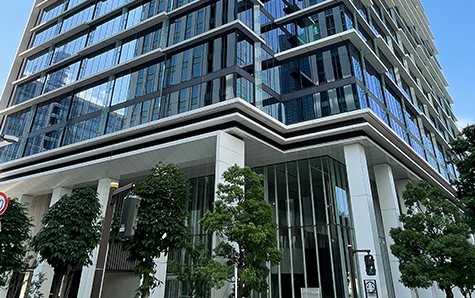

会社概要・選ばれる理由
- ホーム
- 会社概要・選ばれる理由
会社概要・選ばれる理由
相模原市・厚木市で不動産売却や相続について相談するなら、どのような考えを持ち、誰が対応する会社なのかを確認することが大切です。アイモットは、横浜市を拠点に不動産の売買・買取・相続相談などへ対応しています。楠本代表が直接お話を伺い、目先の取引だけでなく、お客様が納得できる解決方法を一緒に考えます。
アイモットは不動産の先にある課題まで考えます

アイモットが大切にしているのは、不動産を売ること自体を目的にしないことです。同じ物件でも、相続、住み替え、離婚、住宅ローンなど、売却に至る事情は一人ひとり異なります。物件の価格だけを見るのではなく、お客様が抱える課題と売却後の生活まで整理し、複数の選択肢から納得できる出口をご提案します。
売却ありきではなく、最適な方法を考えます
ご相談いただいた結果、すぐに売却しない方がよい場合もあります。仲介、買取、賃貸、管理、土地活用などを比較し、それぞれに必要な費用や期間、注意点をご説明します。会社の都合に合わせて一つの方法へ誘導するのではなく、お客様が判断するために必要な情報を整理することが私たちの役割です。
事情や背景を丁寧に伺います
不動産のご相談には、ご家族の関係や今後の生活など、周囲へ話しにくい事情が含まれることがあります。楠本代表が直接お話を伺い、表面的なご希望だけでなく、その背景まで丁寧に整理します。相談内容を何度も別の担当者へ説明する必要がなく、最初から最後まで一貫した方針で進められます。
売却後の生活まで見据えます
高く売れたとしても、希望する時期に引き渡せなかったり、想定外の費用が生じたりすれば、納得できる売却とはいえません。住宅ローンの返済、新居への住み替え、相続人への分配なども確認し、売却価格だけでなく、手取り額や今後の予定まで含めた進め方をご提案します。
アイモットが選ばれる7つの理由
不動産会社を選ぶ際は、査定価格の高さだけでなく、担当者の経験、提案の幅、連絡の早さ、問題が生じた際の対応力も重要です。アイモットでは、代表が窓口となり、お客様の事情を把握したうえで売却活動を進めます。複雑な問題もそのままにせず、必要な対応を一つずつ整理します。
1．代表の楠本が最初から最後まで直接対応
ご相談、査定、販売計画、価格交渉、契約、引き渡しまで、代表が直接対応します。途中で担当者が変わることによる情報の行き違いを防ぎ、最初に伺ったご希望や事情を売却活動へ一貫して反映します。状況が変わった場合も、代表本人と相談しながら方針を見直せる体制です。
2．迅速なレスポンスと柔軟な行動力
購入希望者からの問い合わせや価格交渉では、対応の早さが結果へ影響することがあります。アイモットでは、売主様からのご質問や関係者からの連絡を確認し、迅速に対応することを大切にしています。すぐに回答できない内容も、確認の状況や回答予定を共有し、不安なままお待たせしないよう努めます。
3．仲介・買取から適した方法をご提案
価格を重視する方には仲介、売却時期や確実性を重視する方には買取が向いている場合があります。一定期間は仲介で高値を目指し、期限に合わせて買取へ切り替える方法も選択肢です。どちらか一方だけを勧めず、想定価格、期間、費用、負担を比較したうえでご提案します。
※表は左右にスクロールして確認することができます。
| 比較項目 | 仲介 | 買取 |
|---|---|---|
| 買主 | 個人・法人・投資家など | 不動産会社 |
| 売却価格 | 市場価格に近い価格を目指しやすい | 仲介より低くなる傾向 |
| 売却期間 | 買主が見つかるまで必要 | 比較的短期間 |
| 内覧・広告 | 原則として必要 | 原則として不要 |
| 向いている方 | 価格を重視する方 | 早さや確実性を重視する方 |
4．複雑な事情を
整理する提案力
相続、共有名義、離婚、住宅ローン、底地・借地などが関係する不動産は、通常の販売活動だけでは解決できないことがあります。誰の同意が必要か、どの手続きを先に進めるか、どの費用がかかるかを整理し、売却までの道筋を明確にします。問題を理由に断るのではなく、解決できる方法を検討します。
5．売却以外も含めたトータルサポート
不動産売却では、相続登記、住宅ローンの返済、境界確認、残置物整理、清掃、解体などが必要になる場合があります。アイモットでは、売却活動だけでなく、その前後に必要な作業も整理します。売主様が複数の相談先を探す負担を抑え、全体のスケジュールを確認しながら進めます。
6．居住用から収益用不動産まで対応
戸建て、区分マンション、土地、空き家だけでなく、一棟アパート・マンションなどの収益用不動産にも対応します。居住用と収益用では、査定基準や購入希望者が確認する項目が異なります。物件種別ごとの特徴を整理し、想定する買主に合わせた販売方法をご提案します。
7．長期的な信頼関係を大切にします
アイモットが目指すのは、契約が完了したら終わる関係ではありません。売却後の確定申告、住み替え、資産の組み替え、将来の相続など、不動産に関する新たな相談が生じることがあります。「何かあったら代表へ相談しよう」と思っていただける関係を築くことを大切にしています。
複雑な不動産問題も一つの窓口で整理します
不動産に関する問題は、一つだけとは限りません。相続登記が済んでおらず、建物には荷物が残り、相続人同士の意見も異なるなど、複数の課題が重なることがあります。アイモットが最初の窓口となり、現在の状況を整理したうえで、必要な手続きと相談先を明確にします。
相続・共有名義の問題
相続した不動産や共有名義の物件では、所有者や関係者の確認が必要です。相続人同士で売却への意見が異なる場合は、査定価格、維持費、各選択肢の注意点など、客観的な判断材料を整理します。法的な判断や争いへの対応が必要な場合は、弁護士や司法書士との連携を検討します。
住宅ローン・任意売却の問題
住宅ローンが残る不動産では、査定価格とローン残高を比較し、売却代金などで完済できるかを確認します。完済が難しく、返済も厳しい場合は、金融機関の同意を得て任意売却を検討できる可能性があります。通知や滞納状況を確認し、早い段階で選択肢を整理します。
境界・越境・権利関係の問題
土地の境界が分からない、建物や配管が隣地へ越境している、底地や借地権が関係している場合は、売却条件の整理が必要です。問題を隠したまま進めず、現地や資料を確認し、必要に応じて土地家屋調査士や司法書士などと連携します。
残置物・清掃・解体の問題
相続した実家や長期間使用していない空き家には、家具や家電、生活用品が残っていることがあります。すべてを処分してからでなければ売れないとは限りません。現状のまま売る方法、整理して仲介する方法、解体して土地として売る方法を比較し、必要な作業だけをご提案します。
相模原市・厚木市を
中心に不動産相談へ対応します
アイモットは、相模原市・厚木市を中心に、不動産売却、買取、相続相談へ対応しています。戸建て、マンション、土地、空き家、一棟収益物件など、物件種別を問わずご相談いただけます。今後は神奈川県内だけでなく、東京都・埼玉県・千葉県を含む1都3県での対応も見据え、相談体制を整えています。
地域の状況と物件固有の特徴を確認します
同じ相模原市・厚木市の中でも、駅からの距離、周辺環境、道路条件などによって不動産の需要は異なります。地域名だけで価格を判断せず、物件の状態や周辺の成約事例、現在の競合物件を調査します。現地を確認し、物件ごとの魅力と注意点を整理したうえで査定します。
遠方からの相続・売却相談にも対応します
相模原市・厚木市に不動産を所有していても、売主様や相続人が遠方に住んでいる場合があります。現地確認のために何度も足を運ぶことは大きな負担です。必要な書類や作業を整理し、鍵の管理、清掃、残置物整理なども含め、できるだけ負担を抑えて進められる方法をご案内します。
事業内容
アイモットでは、不動産の売買・仲介、買取・販売をはじめ、不動産相続に関するコンサルティング、アパートの企画・開発・売買、賃貸管理、中古不動産の再生に取り組んでいます。売却だけでなく、購入、管理、活用なども含め、不動産に関する幅広いご相談へ対応できる体制を整えています。
※表は左右にスクロールして確認することができます。
| 事業内容 | 主なサービス |
|---|---|
| 不動産の売買・仲介 | 戸建て、マンション、土地などの売買支援 |
| 不動産の買取・販売 | 早期売却、現状での売却相談 |
| 相続コンサルティング | 相続不動産の整理、活用、売却相談 |
| アパートの企画・開発・売買 | 収益用不動産、土地活用 |
| 賃貸管理 | 入居者対応、建物管理など |
| 中古不動産の再生 | リノベーション、リフォーム |
会社概要
| 項目 | 内容 |
|---|---|
| 会社名 | i Motto株式会社（不動産のアイモット） |
| 代表者 | 代表取締役 楠本 祥一 |
| 横浜本社 | 〒220-0012 神奈川県横浜市西区みなとみらい3-7-1 オーシャンゲートみなとみらい10F |
| 東京営業部 | 〒169-0051 東京都新宿区西早稲田1丁目9番9号 |
| お客様専用ダイヤル | 0120-984-113 |
| 営業時間 | 9:00～21:00 |
| 定休日 | 不定休 |
| 主な対応地域 | 東京都・神奈川県・埼玉県・千葉県 |
| 宅地建物取引業免許 | 国土交通大臣（2）第9952号 |
| 加盟団体 | 公益社団法人 全日本不動産協会 |
| 加盟団体 | 公益社団法人 不動産保証協会 |
| FAX | 050-3512-2145 |
主な取扱い物件
アイモットでは、空き家、土地、戸建て、マンション、タワーマンションなどの居住用不動産から、アパート、一棟マンション、区分マンションなどの収益用不動産まで取り扱っています。物件の状態や権利関係に課題がある場合も、最初から売却できないと判断せず、確認すべき内容と解決方法を整理します。
※表は左右にスクロールして確認することができます。
| 居住用・土地 | 収益用・事業用 |
|---|---|
| 空き家 | 一棟アパート |
| 土地・空き地 | 一棟マンション |
| 戸建て | 投資用区分マンション |
| 区分マンション | 収益用不動産 |
| タワーマンション | 事業用不動産 |
「この人に相談したい」と思っていただくために
不動産の売却では、会社の規模や知名度だけでなく、実際に対応する担当者との相性も重要です。相談しにくい事情を話せるか、分からないことへ正直に答えてくれるか、問題が起きたときに向き合ってくれるかを確認しましょう。アイモットでは、代表がお客様との信頼関係を大切にし、最後まで責任を持って対応します。
顔が見える
安心感を大切にします
誰へ相談し、誰が売却活動を担当するのかが明確であれば、連絡や判断を進めやすくなります。アイモットでは、代表紹介や仕事への考え方を公開し、ご相談前に代表の人柄や姿勢を知っていただけるようにしています。安心して話せる相手かを確認したうえでご相談ください。
不利な情報も
正直にお伝えします
不動産には、築年数、立地、権利関係など、売却へ影響する注意点がある場合があります。良い面だけを強調すると、販売中や契約後の問題につながる可能性があります。売主様にとって不利な情報も隠さず、価格や期間へどのような影響があるかをご説明します。
納得できないまま契約を急がせません
査定やご相談をしたからといって、媒介契約や売買契約を急ぐ必要はありません。売却方法ごとのメリットと注意点、必要な費用、想定期間をご説明し、売主様が理解したうえで判断できるよう支援します。疑問や不安が残っている場合は、一つずつ確認してから進めます。
不動産のことならアイモットへご相談ください
相続した実家、住み替え予定の自宅、管理が難しい空き家、ローンが残る不動産など、売却のお悩みは一人ひとり異なります。アイモットでは、物件だけでなく、お客様の事情と売却後の生活を整理したうえで、適した解決方法をご提案します。まだ売却を決めていない段階でも、現在の状況からご相談いただけます。
お客様の納得できる解決まで伴走します
アイモットでは、代表が直接お話を伺い、査定、販売活動、問題解決、契約、引き渡しまで責任を持って対応します。複雑な事情があっても、必要な手続きと選択肢を分かりやすく整理します。相模原市・厚木市で「この人なら安心して相談できる」と思える不動産会社をお探しの方は、アイモットへご相談ください。